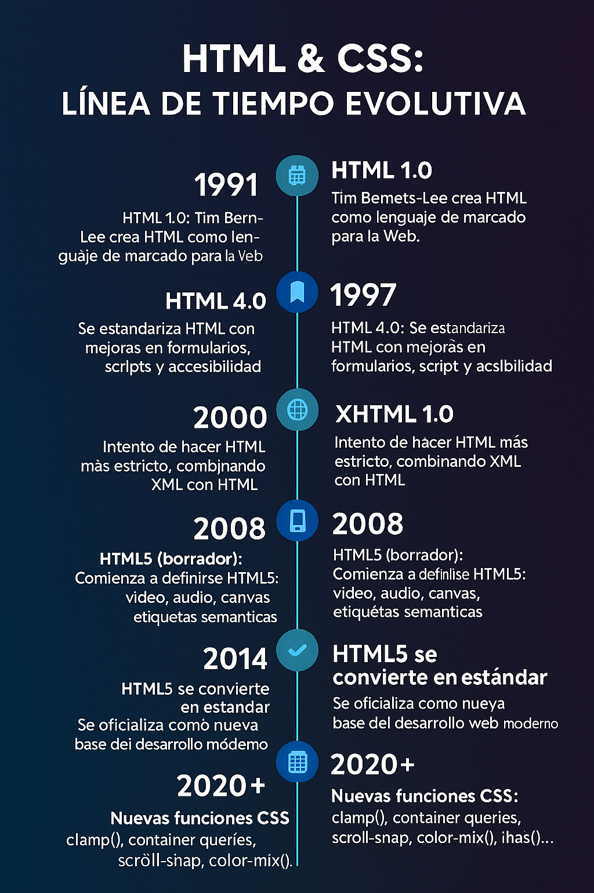

El lenguaje HTML fue creado en 1991 por Tim Berners-Lee como una forma simple de estructurar contenido para la web.
Con el tiempo, se añadieron nuevas etiquetas y versiones. HTML4 marcó un punto clave en 1999, y luego llegó HTML5 en 2014, trayendo etiquetas semánticas, multimedia, formularios mejorados y más.
Mientras tanto, CSS apareció en 1996 para separar el diseño visual del contenido. Hoy usamos CSS3 con animaciones, gradientes, media queries, flexbox y grid.
Estos lenguajes son la base del desarrollo web y siguen evolucionando.